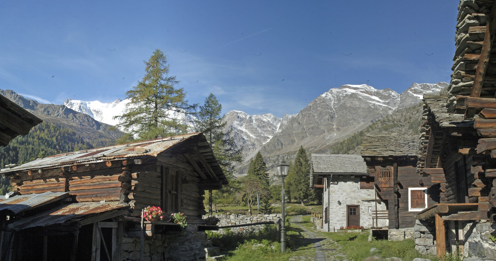

Échapper à la ville, cuore delle Alpi
Macugnaga, la montagna vera, vicina a Milano, al Lac Majeur, Novara, Varese e città della pianura — e a Torino, Genova e la Svizzera: gite, weekend e soggiorni lunghi in un villaggio alpino autentico.
Centralità
Lontano dal rumore, a portata di strada
Macugnaga è il punto d’incontro ideale tra Pianura Padana e Alpi: facilmente raggiungibile da Milano, Varese, Novara e dal Lac Majeur (anche Orta e Mergozzo), et aussi depuis Torino, Genova, Canton Vallese e Ticino.
Ideale per gite in montagna, idee weekend fuori città e per ritrovare se stessi e i propri affetti — oppure per settimane rigeneranti e soggiorni lunghi, anche per nomadi digitali e chi cerca quiete per studiare o lavorare. Se soggiorni in hotel o campeggio sui laghi, Macugnaga è una meta in montagna raggiungibile per una giornata: prenota online.
Pianifica il weekend
Come restare
Week-end, settimane, vita lenta
- Week-end — fuga breve con pernottamento ed esperienze a contatto con la natura
- Settimane — ritmo lento, escursioni soft, cultura e benessere
- Soggiorni lunghi — base tranquilla per lavoro remoto e studio
FAQ
Questions fréquentes sulla fuga dalla città
Macugnaga è la montagna vera, vicina a Milano, Novara, Varese e città della pianura?
Sì: circa 2 ore da Milano, 1,5 ore da Novara e Varese; raggiungibilet aussi depuisl Lac Majeur, da Torino, Genova e dalla Svizzera. Ideale per gite in montagna e weekend Macugnaga Monte Rosa.
Che tipo di gita in montagna si può fare?
Expériences a contatto con la natura, passeggiate, benessere, Maison Walser e mine d’or — montagna accessibile, senza alpinismo tecnico. Réserver en ligne.
Meglio un weekend o un soggiorno più lungo?
Entrambi: il weekend basta per natura e relax; settimane e soggiorni lunghi sono perfetti per quiete, studio e lavoro remoto. Vedi anche Idées week-end.